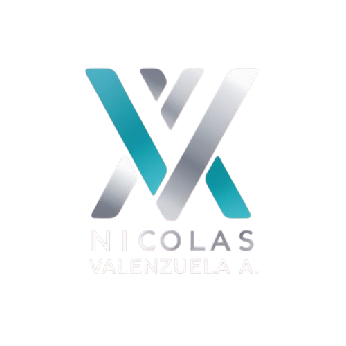
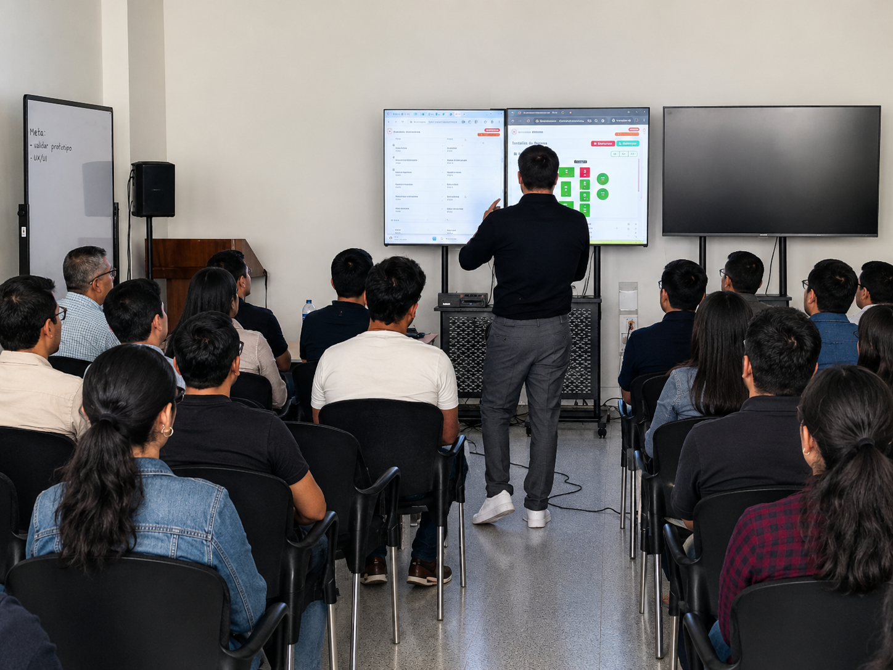

01 / 05
Frontend con HTML, CSS y JavaScript
Construcción de interfaces para la web.
Unidades Tecnológicas de Santander
COEX Model SAS
COEX Model SAS
- Intensidad
- 120 horas
- Año de expedición
- 2022

Soy Nicolás Valenzuela, analista y desarrollador de software en formación. Combino desarrollo web y bases de datos para convertir ideas en soluciones útiles.
Analista y desarrollador de software en formación. Interfaces, lógica y datos.
Proyectos donde convierto lo que aprendo en soluciones concretas.

Soy analista y desarrollador de software en formación, con cerca de un año de experiencia en proyectos web y gestión de bases de datos. Vivo en Bucaramanga y combino formación técnica con experiencia directa en atención al cliente y operación de negocios.
Ese contacto con el día a día de un negocio dio origen a DINARES, mi proyecto de gestión para restaurantes. Me interesa crear interfaces claras, APIs bien estructuradas y bases de datos que tengan sentido.
Explora las tecnologías con las que trabajo y cómo las aplico en desarrollo web.
Formación certificada por las Unidades Tecnológicas de Santander y COEX Model SAS.
Construcción de interfaces para la web.
Lógica de servidor y desarrollo con Node.js.
Fundamentos para pensar y resolver problemas con código.
Organización, modelado y gestión de la información.
Modelado de soluciones con objetos y estructuras de código.
Coordinación de pedidos con cocina y caja, manejo responsable de pagos y atención al cliente. Complemento esta experiencia operativa con apoyo tecnológico y participación en la presencia digital del negocio familiar.
Experiencia inicial en un entorno empresarial de software mediante contrato de aprendizaje.
Práctica en interfaces, lógica de negocio, consumo de APIs y modelado de datos.
Formación en desarrollo de software. Etapa productiva en proceso de finalización.
Cinco semestres cursados entre febrero de 2022 y junio de 2024. Formación en programación, lógica y bases de datos.
Formación práctica orientada al desarrollo de aplicaciones web.
Platzi Academy · 2023
Unidades Tecnológicas de Santander · 2023
Universidad de Pamplona · 2020
160 horas · JavaScript y Node.jsEscuela de Organización Industrial de España · 2015
¿Un proyecto web, una oportunidad de trabajo o una colaboración? Elige el punto de partida y cuéntame qué necesitas.
Conectemos en LinkedIn↗